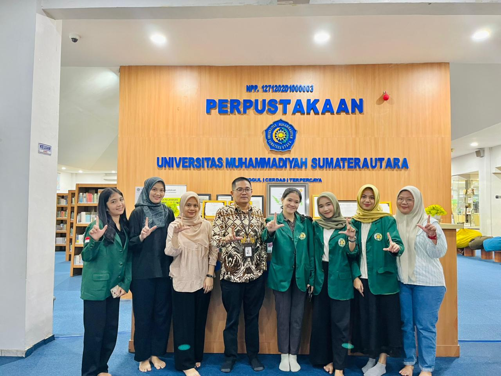

Berbagai acara literasi, promosi perpustakaan, dan kegiatan edukatif yang telah terlaksana sebagai bagian dari visi KyLib dalam membangun generasi cerdas.

Studi Praktik Manajemen Kearsipan dan Tata Kelola Informasi.
Kegiatan observasi ini merupakan bagian dari penguatan kompetensi praktikal mahasiswa Universitas Sumatera Utara (USU) dalam memahami dinamika pengelolaan arsip di instansi pendidikan. Kunjungan ke Perpustakaan UMSU bertujuan untuk membedah sistem dokumentasi, klasifikasi arsip, serta integrasi teknologi informasi yang diterapkan oleh salah satu perpustakaan perguruan tinggi unggulan di Sumatera Utara.
Dalam rangkaian acara tersebut, dilakukan sesi diskusi dan tinjauan langsung terhadap alur kerja administrasi perpustakaan. Mahasiswa mempelajari bagaimana teori-teori kearsipan yang didapat di bangku kuliah diimplementasikan secara nyata untuk mendukung akreditasi dan layanan informasi yang efektif.
-
-
-